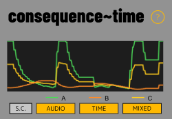
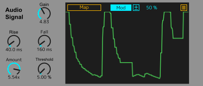
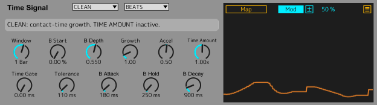
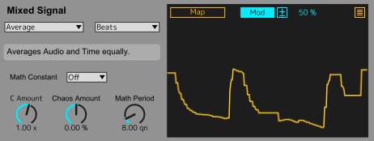
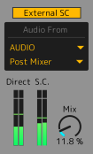

1
Send some audio
For an already prepared internal test runtime, use an audio track with real input. Independent installation of this candidate remains blocked.
Consequence of Time is a modulation device that uses mathematical relationships between audio and time to reshape modulation organically. Dedicated controls let you decide how contact duration influences its behavior.
No public release is currently confirmed. This documentation is a draft based on testing candidate 0.1.6.4; internal milestones are deliberately excluded from public release notes.

Development reference only · final installation workflow to be verified on the distributed build.
For an already prepared internal test runtime, use an audio track with real input. Independent installation of this candidate remains blocked.
A follows intensity. B develops after contact qualifies. C can combine their final signals; start with neutral Audio Thru.
Use AUDIO for Gain, A Rise/Fall and Threshold. Begin with TIME GATE 0, Threshold 5%, Tolerance 110 ms and CLEAN. Open MIXED independently.
A, B and C each have a native 1+7 mapper. Choose Mod or Remote deliberately and verify the actual target response after a Set reload.
Start in CLEAN, then explore the seven other modes and their Time Amount controls.
Le note aggiornate per le candidate attuali sono in inglese, in attesa di revisione delle traduzioni tecniche. Le altre sezioni conservano le traduzioni precedenti.Die aktualisierten Hinweise zu den aktuellen Testversionen bleiben bis zur technischen Übersetzungsprüfung auf Englisch. Andere Abschnitte behalten ihre bisherigen Übersetzungen.Las notas actualizadas de las candidatas actuales están en inglés, pendientes de revisión de la traducción técnica. Las demás secciones conservan sus traducciones anteriores.Les notes mises à jour pour les versions candidates actuelles restent en anglais, en attente de révision de la traduction technique. Les autres sections conservent leurs traductions précédentes.
Guide: 0.1.6.4 REV10 internal testing candidate; preserved baseline 0.1.6.3. Scoped M5 audio, mapping and cold-recall evidence is available. Remote Unmap after recall remains a known limitation, also observed with the stock Envelope Follower in a separate M5 test; its cause is unproven. Exact 0.1.6.4 Intel and Windows validation is pending. Independent installation remains blocked. Illustrations show example settings, not factory defaults.
Live metadata unavailable. The versioned static guide remains readable.
Tracks audio intensity via an envelope follower. A ranges from 0 to 1 and responds relatively quickly to changes in the source.
Accumulates recognized contact time. B also ranges from 0 to 1, but follows its own time engine, hold and decay.
MAIN overlays three independent 0–1 traces: A green, B orange and C yellow. C reads final A/B without feedback and has its own MIXED scope and mapper.

Use the main track input or select an external sidechain. Check routing when nothing moves.
Adjust incoming level before the signal is analyzed.

Set how quickly signal A reacts to increasing and decreasing audio intensity. These controls do not modify B Attack, Hold or Decay.
Adjust the amount applied to normalized A. It is not the contact threshold used by the time engine.
Audio uses the shorter labels Rise, Fall, Amount and Threshold. Amount still scales A; Threshold still qualifies Time contact. The underlying Live names and all ranges, defaults and signal behavior are unchanged.
AUDIO THRESHOLD is amplitude after Gain/Rise/Fall, before Audio Amount: UI 0–100%, effective clamp 0.1–95%, default 5%. TIME GATE is a separate qualification duration: 0–2000 ms, default 0, in 5 ms steps.
After contact is active, the release threshold is 65% of AUDIO THRESHOLD. TOLERANCE allows continuous time below that release level before HOLD then DECAY. It does not qualify initial contact.

Choose BEATS (musical tempo) or TIME (elapsed time) as the accumulation window; the two modes retain separate values.
Growth changes phase rate. Accel −10…+10, default 0.5, accelerates or slows forward growth without reversing phase. FREEZE may intentionally stop the phase.
Set initial signal level and range of movement.
Attack smooths growth, Hold keeps the value after contact is lost, Decay returns B toward zero.
Threshold 5%, Gate 50 ms, Tolerance 110 ms: 50 ms continuously above 5% qualifies contact; falling below 5% resets qualification. A keeps moving. On qualification B starts at phase zero and grows from the next nominal 5 ms tick. Once active, 110 ms below 3.25% ends contact. Gate 0 retains immediate startup; timing is not sample-accurate.
Window retains separate Beats/Time values. Native dials may display 1752.125 ms as 1.75 s without quantizing the stored value. B Start and REVERSE can produce positive B even at time phase zero.
The patch already includes a concise message for the selected Behaviour. The supplied view shows CLEAN; this inline detail preserves that message. Only one mode is active at a time.
Pure time evolution. Time Amount has no effect in CLEAN.
Changes movement range in response to intensity.
Changes accumulation speed in response to intensity.
Adds signal-dependent irregular fluctuations.
May produce a descending positive curve, not negative output; transitions can be abrupt.
Can pause time progress when intensity meets its condition.
Quantizes the time signal into discrete steps.
Combines speed changes and irregular fluctuations. Time Amount adjusts each active behavior, not the basic B Depth.
Begin with Audio Thru, C Amount +1, Chaos 0 and Math Constant Off. C equals A exactly, including tiny values. Time Thru passes B the same way.
Nine modes: Sum (soft saturation), Average, Difference (A−B), Ratio A/B, Ratio B/A, Multiply, Distance (abs(A−B)), Audio Thru and Time Thru. Ratios are protected near zero and bounded. Sum differs from Average. C Amount is −10…+10, default +1. At relevant activity of at least 1%, Amount −1 on Thru gives 1−A/B. Amount 0 gives the centre 0.5 while active; it does not unmap the target.
The Combine message in the patch explains the selected mode. This supplied example shows Average.

Non-neutral C carriers fade continuously to zero below 1% relevant final activity using t²(3−2t), t=clamp(activity/0.01,0,1). Activity is A for Audio Thru/Ratio A/B, B for Time Thru/Ratio B/A, min(A,B) for Multiply, max(A,B) otherwise. Neutral Thru bypasses attenuation. Equal active sources in Difference give 0.5; absent sources give zero. Carrier zero under Mod does not universally mean target zero.
Math Period sets the base cycle duration; Math Constant sets the ratio/phase. Constants: Off, π, e, φ, √2, ln2. Chaos Amount is −100…+100%, default 0; negative values flip deterministic motion. Chaos 0 or Constant Off removes motion exactly. Separate memories: Beats 1–64 quarter notes, default 8; Time 100–60000 ms, default 4000. A 100 ms floor is shown when applied. Visible labels preserve stored parameter identities.
Beats advances with transport Play; Time can advance with useful input while transport is stopped. B Hold/Freeze/Decay does not freeze C. Tempo feed updates every 250 ms; no sample-accurate or song-position lock is promised. Loading restarts phases; controls and the two period caches persist.
A first-slot C Mod → Remote transition failed in a historical instrumented M5 fixture. Later exact-device M5 tests and user-reported Intel 0.1.6.1 mixed-mode tests were positive in their own scope; they do not erase that earlier failure. Remote → Mod may use the last absolute position as the new relative base: this is accepted behavior. Verify the actual destination after changing mode.
Each output has its own native 1+7 mapping interface. The overlay covers its local scope while modulation and MAIN continue. Verify both destination association and mode after recall.
Mod works as relative modulation around a parameter base value. Remote takes exclusive control of its destination. These are native Ableton behaviors.
After mapping, verify actual modulation after saving and reopening the Live Set — not only that the destination name persists.
The mapping interfaces use native Live/Max for Live controls for Mod/Remote to support familiar Live interactions. Public Max APIs document mapping and modulation, while this implementation also uses internal Ableton abstractions: documentation of native APIs does not certify every abstraction, platform or redistribution right. Those dependencies and portability remain unresolved; no public installation package is offered.
After recalling a Set, X may clear a Remote mapping row while its former target remains locked. The symptom was also reproduced with the official stock Envelope Follower in a separate M5 test. The cause is unproven; this is retained as a known limitation in 0.1.6.4. Check actual target editability and movement rather than the Map label. Preserve a copy of the Set and report exact versions; no reliable workaround is promised.
Analyze the audio passing through the track that contains Consequence of Time.

Choose an appropriate external source and channel in Live, set Mix, then inspect A/B/C in MAIN. The sidechain indicator reports routing state, not measured loudness.
SC opens to the left of MAIN; AUDIO, TIME and MIXED open independently to the right. MAIN stays visible. The SC button alternates native fill and yellow every 200 ms for an enabled, valid external route with Mix above zero, even when its panel is closed.
Confirm that audio is present, inspect source and routing, increase Gain as appropriate, and check the contact threshold and B Depth.
Check the threshold and Tolerance, the Window, Growth, B Start/Depth and whether sufficient contact time has accumulated.
In Mod mode, the base knob may stay at its set value while modulation operates. Check the destination response, not only the knob position.
Independent installation of 0.1.6.4 is blocked. Do not open the staged package as a self-contained device or use extracted stock resources, scripts, symlinks or manual search-path changes as a customer installation. Await a validated package; preserve existing test Sets and originals.
The current prepared M5 runtime has scoped audio, three-curve, mapping and cold-recall evidence with Live 12.4.2 / Max 9.1.4. External sidechain end-to-end was not tested on the exact 0.1.6.4 candidate. Earlier Intel 0.1.6.2 sidechain and Unmap results are user-reported for that build. Intel 0.1.6.4, Windows, all themes and every mapping slot remain unverified.
The envelope follower translates the level of the input signal into a continuous normalized modulation output.
Contact recognition drives a separate time engine. Window, Growth, Accel, Hold, Decay and Behavior change the shape of B.
Output C is integrated for testing in 0.1.6.4. It reuses final A/B at the existing nominal 5 ms tick, with its own mapping and trace. This is not a release-ready claim.
The project is a modulation effect: it is intended to let audio pass rather than synthesize new sound.